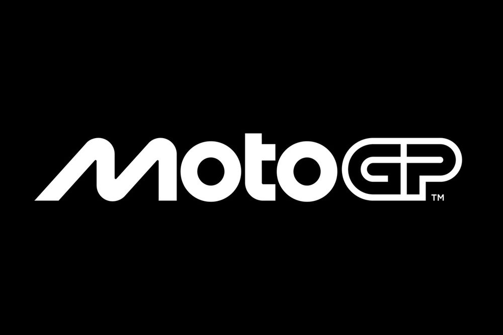
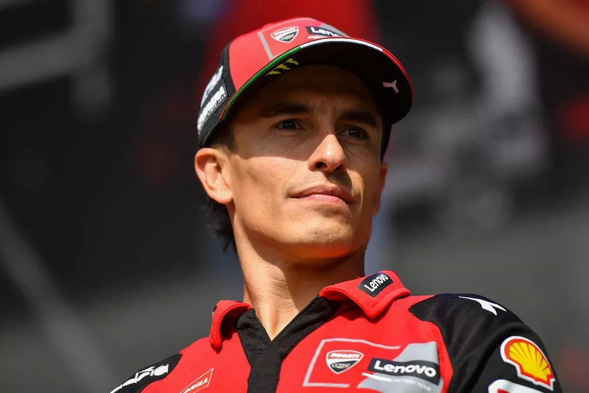
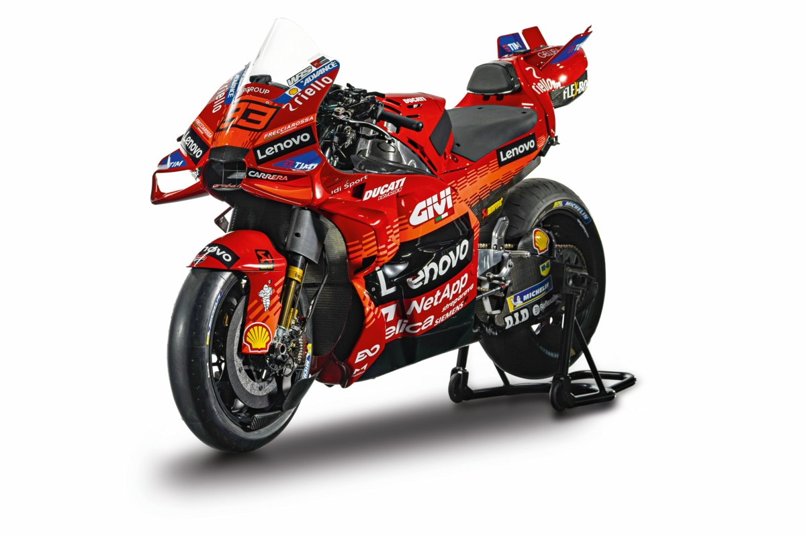
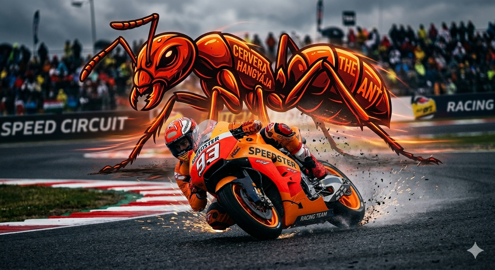

{kind=link}

MOTO GP
Marc Márquez
Marc Márquez a MotoGP történetének egyik legismertebb versenyzője. A spanyol motoros agresszív vezetési stílusáról és látványos előzéseiről híres. Többszörös világbajnok, jelenleg Ducati motorral versenyez. Rajtszáma a híres 93-as.

A motorja
A Ducati Desmosedici GP az egyik leggyorsabb MotoGP motor. A motor több mint 300 km/h sebességre képes, karbon fékrendszert és aerodinamikai szárnyakat használ. A Ducati motorok erős gyorsulásukról és agresszív kinézetükről híresek.

A "Cervera Hangyája"
Marc Márquezt gyakran nevezik a "Cerverai Hangyának" (El Hormiga de Cervera). A hangya a kabalája, ami azt szimbolizálja, hogy bár egy motorversenyző kicsi a hatalmas gépekhez képest, elképesztő erő, kitartás és munkabírás lakozik benne. A sisakjain is rendszeresen feltűnik ez a motívum.

A Rekordok Embere
Marc összesen 8-szoros világbajnok (ebből 6 címet a királykategóriában, a MotoGP-ben szerzett).
2013-ban, mindössze 20 évesen és 266 naposan lett a MotoGP legfiatalabb világbajnoka, megdöntve Freddie Spencer
évtizedes rekordját. Karrierje során több mint 80 futamgyőzelmet aratott.
.png)